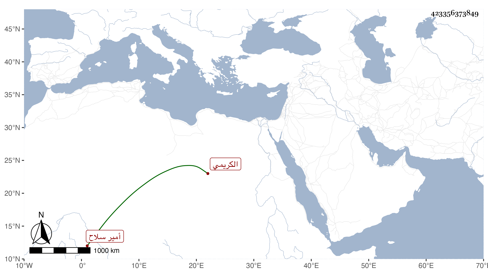

0902Sakhawi.DawLamic.ITO20230111-ara1.EIS1600.423356373849
Biography ID: 423356373849
237
زينب ابنة جرباش الكريمي أمير سلاح . مولدها سنة ثلاثين وثمانمائة وتزوجها الظاهر جقمق في أوائل سلطنته واستولدها ولدا لم يكمل سنة وحجت في أيامه مع أبويها وصارت بعد فراقه خوند البارزية صاحبة القاعة الكبرى ومات عنها فتزوجها بعد مدة الشرف الأنصاري ونقم عليها ذلك من لم يتدبر إلى أن ماتت تحته بدارها قريبا من قبطرة طقز دمر بالطاعون شهيدة في يوم السبت سادس عشري جمادى الآخرة سنة أربع وستين عن بضع وثلاثني سنة ودفنت بمدرسة الظاهر برقوق بين القصرين لكون أمها فاطمة ابنة قانباي ابن اخت صاحب المدرسة رحمها الله وأيانا .
